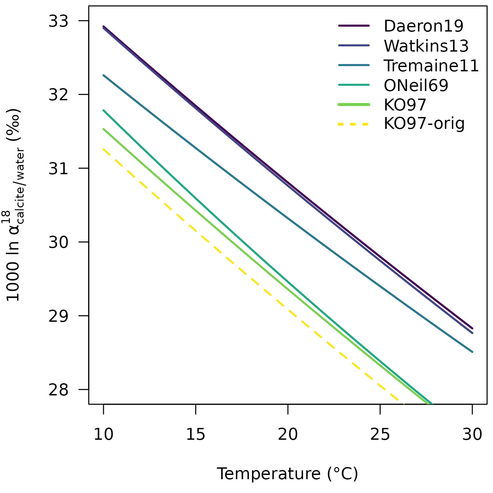

This vignette provides a detailed description of the reprocessing of the 18O/16O fractionation factor between calcite and water provided by Kim and O’Neil (1997):
103lnα = 18.03 x 1000 / T - 32.42
To calculate calcite δ18O values from the δ18O values of CO2 produced from acid digestion, Kim and O’Neil (1997) used an 18O/16O acid fractionation factor (AFF) of 1.01050 at 25 °C. However, the current IUPAC recommendation for an AFF at 25°C is 1.010254 (see Kim et al. 2007 and 2015). The difference between calcite δ18O values calculated using the two acid fractionation factors is ca. 0.24‰.
To be able to apply the Kim and O’Neil (1997) equation to calcite δ18O data produced with the IUPAC-recommended acid fractionation factors and to compare the Kim and O’Neil (1997) equation with more recent oxygen isotope paleothermometry equations, such as the Daëron et al. (2019) equation, the original data has to be reprocessed.
Download, install, and load the isogeochem package:
if (!require("isogeochem")) install.packages("isogeochem")
library("isogeochem")The data is from Table 1 in Kim and O’Neil (1997). All δ18O values are expressed on the VSMOW scale.
Lets reproduce the slope and intercept of the original equation.
# Calculate the fractionation factor between calcite and water
a18_calcite_H2O = a_A_B(A = d18O_calcite, B = d18O_H2O)
# Calculate the 1000ln alpha values, abbreviated here as "elena"
# Kim and O'Neil (1997) used values rounded to two decimals
elena_orig = round(1000 * log(a18_calcite_H2O), 2)
# Fit a linear regression on the values
lm_orig = lm(elena_orig ~ TinK)
slope_orig = round(as.numeric(coef(lm_orig)["TinK"]), 2)
intercept_orig = round(as.numeric(coef(lm_orig)["(Intercept)"]), 2)
# The original equation:
slope_orig
#> [1] 18.03
intercept_orig
#> [1] -32.42
# Convert d18O_calcite to d18O_CO2acid using the "old" AFF
d18O_CO2acid = A_from_a(a = 1.01050, B = d18O_calcite)
# Convert d18O_CO2acid to d18O_calcite using the "new" AFF
AFF_new = a18_CO2acid_c(25, "calcite")
d18O_calcite_newAFF = B_from_a(a = AFF_new, d18O_CO2acid)
# Calculate the new alpha and 1000ln alpha values
a18_calcite_H2O_new = a_A_B(A = d18O_calcite_newAFF, B = d18O_H2O)
elena_new = 1000 * log(a18_calcite_H2O_new)
# Calculate new slope and intercept
lm_new = lm(elena_new ~ TinK)
slope_new = round(as.numeric(coef(lm_new)["TinK"]), 2)
intercept_new = round(as.numeric(coef(lm_new)["(Intercept)"]), 2)
slope_new
#> [1] 18.04
intercept_new
#> [1] -32.18Consequently, the reprocessed equation is:
103 ln α = 18.04 x 1000 / T - 32.18
plot(0, type = "l", las = 1,
ylim = c(28, 33),
xlim = c(10, 30),
ylab = expression("1000 ln " * alpha[calcite / water] ^ 18 * " (‰)"),
xlab = "Temperature (°C)")
temp = seq(10, 30, 1)
lines(temp, 1000 * log(a18_c_H2O(temp, "calcite", "Daeron19")),
col = "#440154FF", lwd = 2)
lines(temp, 1000 * log(a18_c_H2O(temp, "calcite", "Watkins13")),
col = "#414487FF", lwd = 2)
lines(temp, 1000 * log(a18_c_H2O(temp, "calcite", "Tremaine11")),
col = "#2A788EFF", lwd = 2)
lines(temp, 1000 * log(a18_c_H2O(temp, "calcite", "ONeil69")),
col = "#22A884FF", lwd = 2)
lines(temp, 1000 * log(a18_c_H2O(temp, "calcite", "KO97")),
col = "#7AD151FF", lwd = 2)
lines(temp, 1000 * log(a18_c_H2O(temp, "calcite", "KO97-orig")),
col = "#FDE725FF", lwd = 2, lty = 2)
legend("topright", bty = "n", adj = c(0, NA),
lty = c(1, 1, 1, 1, 1, 3),
lwd = c(2, 2, 2, 2, 3, 3),
col = c("#440154FF",
"#414487FF",
"#2A788EFF",
"#22A884FF",
"#7AD151FF",
"#FDE725FF"),
legend = c("Daeron19",
"Watkins13",
"Tremaine11",
"ONeil69",
"KO97",
"KO97-orig"))